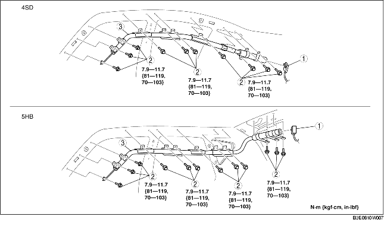

CURTAIN AIR BAG MODULE REMOVAL/INSTALLATION
B3E081000171W01
-
Warning
-
• Handling the air bag module improperly can accidentally deploy the air bag module, which may seriously injure you. Read the service warnings and cautions before handling the air bag module. (See SERVICE WARNINGS.) (See SERVICE CAUTIONS.)
1. Turn the ignition switch to the LOCK position.
2. Disconnect the negative battery cable and wait for 1 min or more.
3. Remove the following parts:
-
(1) Console (4SD) (See CONSOLE REMOVAL/INSTALLATION.)
-
(2) A-pillar trim (See A-PILLAR TRIM REMOVAL/INSTALLATION.)
-
(3) Front scuff plate (See FRONT SCUFF PLATE REMOVAL/INSTALLATION.)
-
(4) Rear scuff plate (See REAR SCUFF PLATE REMOVAL/INSTALLATION.)
-
(5) B-pillar lower trim (See B-PILLAR LOWER TRIM REMOVAL/INSTALLATION.)
-
(6) Upper anchor of the front seat belt (See FRONT SEAT BELT REMOVAL/INSTALLATION.)
-
(7) B-pillar upper trim (See B-PILLAR UPPER TRIM REMOVAL/INSTALLATION.)
-
(8) Rear seat (See REAR SEAT REMOVAL/INSTALLATION.)
-
(9) Tire house trim (See TIRE HOUSE TRIM REMOVAL/INSTALLATION.)
-
(10) Trunk side upper trim (5HB) (See TRUNK SIDE TRIM REMOVAL/INSTALLATION.)
-
(11) C-pillar trim (See C-PILLAR TRIM REMOVAL/INSTALLATION.)
-
(12) Map light (See MAP LIGHT REMOVAL/INSTALLATION.)
-
(13) Interior light (See INTERIOR LIGHT REMOVAL/INSTALLATION.)
-
(14) Sunvisor (See SUNVISOR REMOVAL/INSTALLATION.)
-
(15) Assist handle (See ASSIST HANDLE REMOVAL/INSTALLATION.)
-
(16) Headliner (See HEADLINER REMOVAL/INSTALLATION.)
-
(17) Head lmpact pad (See HEAD IMPACT PAD REMOVAL/INSTALLATION.)
4. Remove in the order indicated in the table.

|
1
|
Connector
|
|
2
|
Bolt
|
|
3
|
Curtain air bag module
|
5. Install in the reverse order of removal.
6. When the ignition switch is turned to the ON position verify that the air bag system warning light illuminates for approx. 6 s and goes out.
-
• If the air bag system warning light does not operate normally, refer to the on-board diagnostic system (air bag system) and perform inspection of the system.